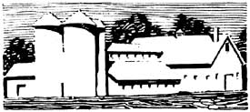
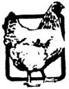
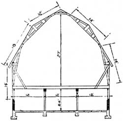

This page contains excerpts from issues of THE COUNTRY GENTLEMAN dated 1915.
WHEN properly handled potatoes make an excellent feed for poultry. They may be fed after being thoroughly cooked, but should never be given raw. If given in a crash of ground grains the proportion should not exceed fifteen or twenty per cent of the complete mixture. As the cooked product is quite similar to corn meal in feeding value, such feeds as bran, middlings, ground oats and meat feeds should be fed in connection with them. After young chicks are weaned they may be given cooked potatoes in the same proportion as has been suggested for the mature fowls. C. L. O.
TIME was when barn-building materials could be had for the cutting or the hauling. But the present increasingly high prices of lumber have forced barn builders to economize wherever it is possible within the limits of safety.
The plank frame barn design shown herewith makes every stick of lumber do its share of the work. The Iowa Experiment Station is striving to help Iowa farmers not only- to solve their problems about livestock and field crops, but to build better barns at the lowest possible cost and to plan them for the greatest efficiency.
This barn-framing plan has met great favor among harn builders. There are no heavy and long timbers in its design. The rafter, are of two-by-six-inch material and the wall studding is of the same size. The joists are two-by-twelves, supported by heavy built-up girders at the center. The roof arches, the wall studding and the joists are all securely tied together and well braced to overcome every possible pressure. The rafters, studding and joists are all placed two feet center to center throughout the length of the barn.
In Iowa a number of barns of this type have been constructed. An estimate shows that they cost about a dollar a square foot of floor space.
W. E. F.
Is any one of the following combinations a sufficient ration for fattening beef: First, corn and soy beans and shredded corn fodder; second, corn and cow peas and shredded corn fodder; third, corn and a mixture of soy beans and cowpeas and shredded corn fodder?
B. P., Ohio.
ANY one of the rations listed might be sufficient to finish steers, but whether the gains would be profitable or not is a different question. If used, the corn and beans or peas should be fed in the proportions of about four to one. The absence of any succulent material in the feeds is serious, while the presence of corn and corn fodder in any considerable amount argues the need for a silo on the farm.
Soy beans or cowpeas, or both, will make a fairly satisfactory substitute for cottonseed meal in steer feeding, and are fed in about the same amounts. If identical in price cottonseed meal might make gains somewhat more economically. There has been little experimental feeding of cowpeas to steers, because the yield is small in the Middle West; the peas ripen irregularly, and the price is high. When grown for feed in that section they are commonly used as forage.
Soy beans are heavier yielders and have been fed to steers with fairly satisfactory results. They seem to be especially good for short feeding periods, but after three months or more steers consuming them may lose their keenness of appetite, and gains will decline slightly. Probably because of the very high fat content, soy-bean-fed cattle have lacked firmness of flesh, resulting in a slight reduction in selling price.
With silage at hand a daily ration more satisfactory than any of those given and about as profitable as any to be had would be shelled corn twelve to fifteen pounds, corn silage twenty to twenty-five pounds, soy-bean meal two and a half to three pounds, and some shredded corn stover in addition.
G. G.
I have some river-bottom, white, sandy land that is very loose. It produces cotton well but not corn, as worms eat the roots. Will this land produce alfalfa, and if not, what is the best grass for it? The soil stands drought ,well and cart kick up moisture any time.
J. H. D., Ark.
IF YOUR land does not overflow so water would cover the crop for more than twenty-four hours, I see no reason why you should not grow alfalfa profitably. It is more difficult to get a stand, of course, where the soil is so loose, but once started the alfalfa plants will bind the soil more closely together. Such land should be sown in the fall, when there is a minimum amount of wind and also when there is sufficient moisture in the soil not only to germinate the seed but also to support the young plants until more rain falls. Do not plant the seed too deep in such loose soil, as the plants will have difficulty in getting through. Better try out a small acreage before going into the crop on a large scale.
Sudan grass should make a big yield of bay on your land and is worthy of a thorough trial in your section. Bermuda or Kentucky blue grass will be your best pasture grass.
C. E. H.
FOUR pounds of apricots, four cupfuls of sugar and four cupfuls of water. Drop the apricots, which must be large and perfect, in boiling water and cook for ten minutes, then drain thoroughly.
Make a sirup with the sugar and water, and when it forms a soft ball when tried in water put in the apricots. Remove from the tire, turn the fruit occasionally and let it stand overnight in a slow oven. Repeat this operation four times, each time skimming out the fruit and letting the sirup just come to a boil. The fifth time make a new sirup, as in the first place, and when it boils and stands the test put in the fruit.
As soon as the sirup is cool dip out the fruit and place it in a pan to harden and candy, keeping it at a temperature of sixty-five degrees. When candied place in boxes between layers of waxed paper.
Bring to the boiling point a pint and a half of vinegar into which have been stirred half a cupful of brown sugar, a tablespoonful of whole cloves and a dozen blades of mace. Boil all together for five minutes, and set aside to cool. Have ready three quarts of chokecherries and put them into glass jars. Strain the spices from the cold vinegar, and pour the latter over the fruit, filling the jars to the brim. Seal at once.
Cut the melon in small pieces about two inches thick and remove skin and seeds. Weigh and measure the pieces. For four quarts take a scant half-cupful of salt and sprinkle it over the melon; pour on cold water to cover and let stand twenty-four hours. Drain thoroughly and boil in fresh water for about half an hour, changing the water if needed to remove salt.
Drain again, and to each pound of fruit add three-quarters of a pound of sugar and one lemon thinly sliced. Again cover with enough water to dissolve the sugar and simmer until transparent and tender.
Eighteen quinces, papaws and sugar.
Peel, quarter and core the quinces. Weigh and put them into a preserving pan, cover with water and cook slowly until tender. Take the same weight of papaws, which have been peeled and cut into pieces about the same size as the quince quarters. Scald well and drain. Add to the quinces their weight in sugar, the well-drained papaws and the juice of the skins and the cores of the quinces, which have been well cooked in water and strained. Cook slowly until thick. Seal in jars.
|
 |
 |
|
|
 |
|
|